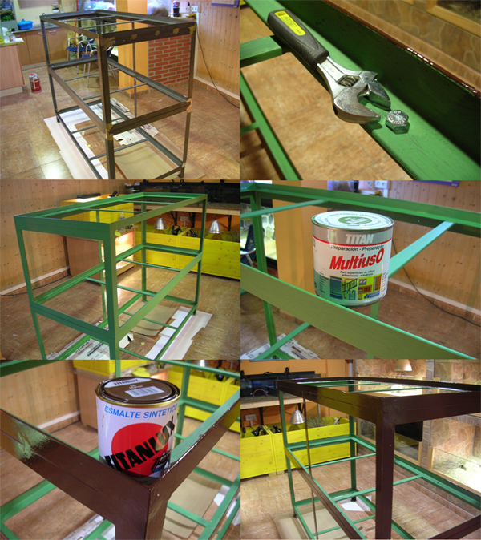
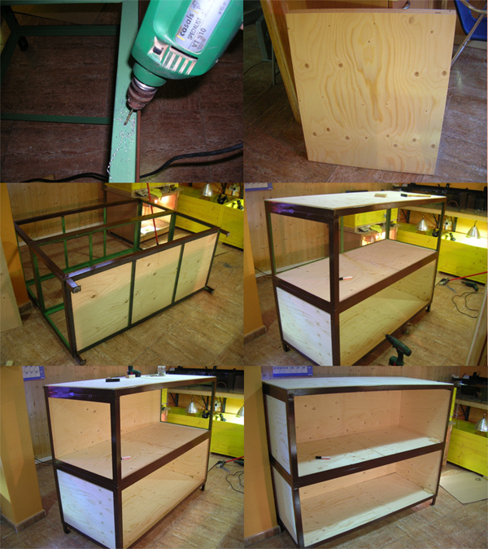
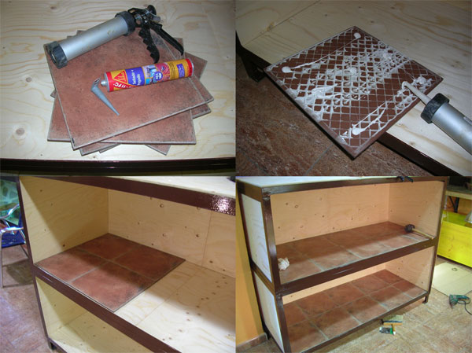
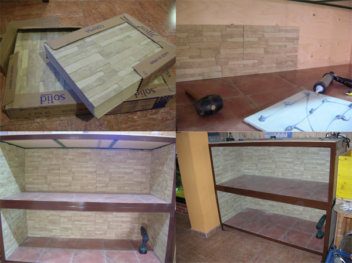
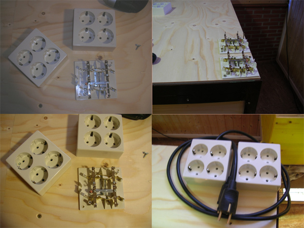
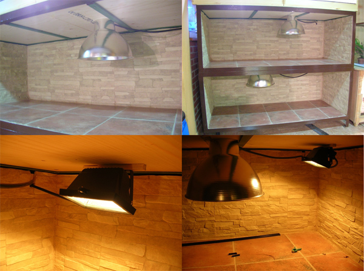
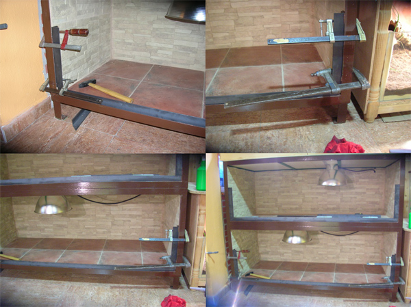
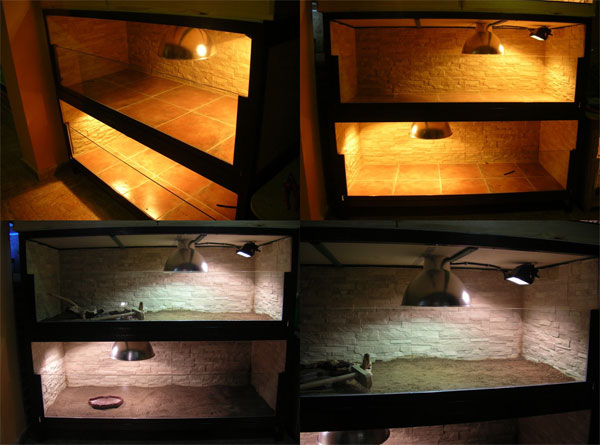
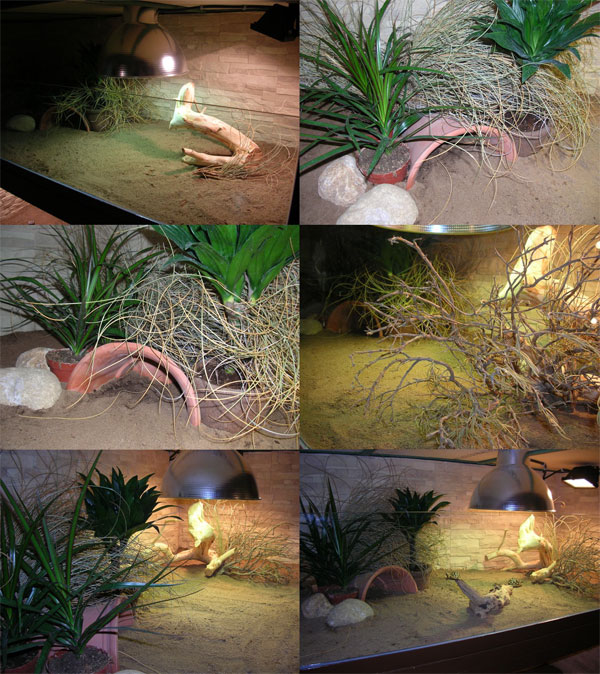
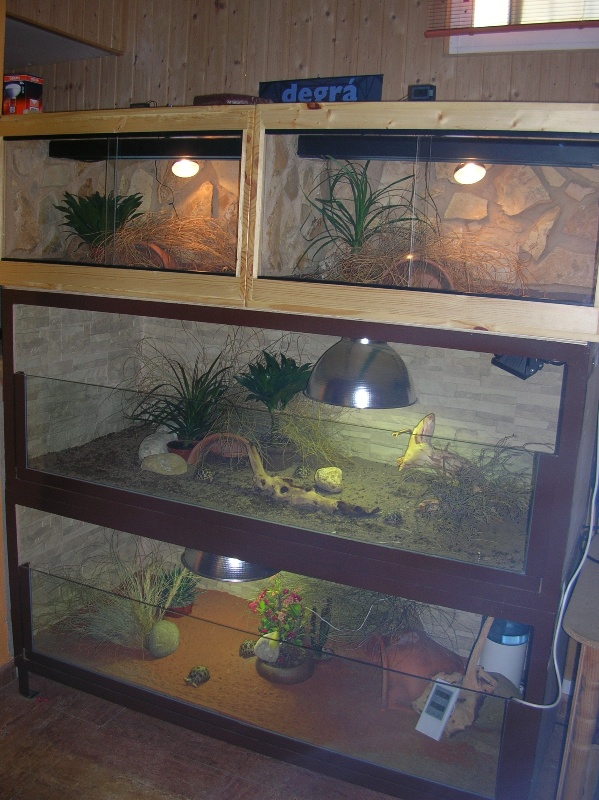

|
BATERÍA DE TERRARIOS
DOBLE EN ÁNGULO DE HIERRO
Fernando Pérez, 2008
Para dar cabida a las nuevas crías que nacen en casa y albergar
algunos ejemplares para observar su completo crecimiento he decidido
construir dos terrarios de gran tamaño que irán instalados uno
encima de otro. A diferencia de los demás alojamientos que se
encuentran en mis instalaciones he decidido realizar estos con
ángulo de hierro, de esta manera minimizo obras inoportunas en la
habitación destinada a los animales y garantizo una fabricación más
rápida y menos tediosa.
He de decir que el resultado ha sido asombroso, de hecho si volviera
a tener que empezar a instalar alojamientos en casa de medio o gran
tamaño sin lugar a duda realizaría este tipo de recintos. Bajo
coste, rapidez máxima y duración de por vida, ¿qué más se puede
pedir?
La única pega que tiene el realizar este tipo de recintos es
fabricar la estructura con ángulo de hierro. La mejor forma de
solucionarlo es acudiendo a un herrero o taller de corte y soldadura
de hierro que nos pueden realizar la estructura. El coste no será
muy alto ya que el material (ángulo de 30/40/50mm, a elegir) no es
nada caro, así que únicamente será el trabajo de corte y soldado de
las piezas para fabricar el cascarón de los alojamientos.
En este caso concreto, sólo voy a utilizar dos terrarios dispuestos
uno encima del otro. Así que fabricaremos dos cascarones distintos,
uno para cada alojamiento, que luego serán anclados con tortillería.
Así mejoramos el manejo de la estructura que será mucho más fácil
individualmente que si se realizara todo en una sola pieza.
Las medidas que utilizaré individualmente por cada alojamiento serán
de 170cm de largo x 70cm de fondo x 60cm de alto. El fondo será de
70cm ya que, como la estructura será soldada en un taller fuera de
casa, es necesario que entre sin problemas por la puerta de acceso a
la habitación bichera. Pero las medidas podrían ser distintas sin
ningún tipo de problema. La fortaleza de los ángulos de hierro es
insuperable, así que nunca tendremos miedo a que puedan deformarse
por el peso de los alojamientos y podremos utilizar las medidas que
nos vengan en gana.
El alojamiento que irá en la zona inferior de la estructura también
lleva unas patas para levantarse del suelo de la habitación y
facilitar la limpieza del sitio donde se instalará, así levantaremos
también un poco el recinto y será más cómodo para trabajar con los
animales. Las patas también son con ángulo de hierro.
Indicar que el ángulo que he utilizado para realizar el cascarón es
de 40mm, barras de 12 metros de longitud, muy fácil de encontrar.
Montaje nº1
Como podéis observar en la primera imagen la estructura ya se
encuentra dentro de la habitación bichera. Unido mediante
tortillería, engarzamos el alojamiento superior con el inferior. Así
la estructura queda montada de una sola pieza y si en un futuro se
decide desmontarla se podrá realizar fácilmente.
Para que el ángulo de hierro se conserve bien, no se oxide y
mantenga buen aspecto, se le da una mano con pintura selladora
especial para hierro. En este caso concreto, he utilizado
imprimación multiuso Titan de color verde. Una vez esperados los
tiempos de secado que aconseja el fabricante, se aplicarán dos
nuevas manos con esmalte sintético del color deseado, en este caso
esmalte Titan de color tabaco, que será el que resalte en los
ángulos de hierro que conformen la estructura.

Montaje nº1
Montaje nº2
Una vez tratado el hierro y pintada la estructura, podremos empezar
con el montaje. Los ángulos nos permiten poder panelar de manera
facilísima el suelo, paredes y techos de la estructura. Bastará con
buscar planchas de la madera que deseemos y que tengan las medidas
necesarias para poder anclarse al cascarón.
Para que la madera quede bien anclada en los ángulos de 40mm, vamos
a realizar, con una pequeña broca de hierro y un buen taladro,
numerosos agujeritos en los ángulos laterales y horizontales donde
irá dispuesta la madera (suelo, fondo, techo y paredes). A través de
estos agujeros podremos anclar los paneles de madera con tornillos
de rosca-madera que fijarán perfectamente. También se podría
utilizar, como anclaje al hierro, masilla de poliuretano que haría
el mismo efecto que los tornillos. He desestimado esta opción por si
en un futuro se deben desmontar los alojamientos. Con tortillería
será mucho más fácil el desmontaje que con la masilla.
Las maderas utilizadas son paneles contrachapados WHISA de 22mm.
Este tipo de paneles es muy similar al contrachapado marino, pero
más barato, De hecho contienen láminas marinas al igual que este,
sin embargo el acabado final es más basto, con lo que se utiliza
mucho en exteriores. Estos tableros se encuentran en almacenes de
carpintería con un tamaño de 125x150cm y con un gran abanico de
grosores, desde 6 hasta 28mm. Personalmente creo que me he excedido
en el grosor del panel utilizado ya que 22mm es demasiado, con 16mm
hubiera sido más que suficiente, la verdad.
En el montaje inferior podemos observar la realización de los
agujeritos para anclar las madera y cómo se van panelando suelos,
paredes, techo y fondo de los alojamientos.

Montaje nº2
Montaje nº3
Una vez panelado todo el cascarón, procedo a ir enchapando con
azulejos el suelo y paredes de los alojamientos. Ya conocéis mi amor
por la masilla de poliuretano, así que un tubo de este producto, una
pistola para su aplicación y una máquina de corte de azulejos serán
las herramientas que necesitaremos para esta parte del montaje. Es
un trabajo muy rápido y eficaz, la verdad, en pocos minutos
tendremos el suelo de los terrarios terminado ofreciendo la
estanqueidad necesaria al recinto para que sea duradero. Para la
zona baja he utilizado los azulejos más baratos y grandes que he
encontrado, puede servir cualquier sobra que tengamos por casa o
restos de existencias que se puedan encontrar en almacenes de
construcción a precios de saldo.

Montaje nº3
Montaje nº4
Para el fondo y paredes laterales he optado por utilizar un azulejo
gres cerámico imitación piedra, misma técnica de anclarlo a la
madera, misma rapidez de trabajo. Una vez pegados todos los azulejos
y esperados los tiempos de secado, para que el poliuretano haga su
trabajo, procederemos a lechear con cemento todas las uniones entre
azulejos de suelo y paredes. De esta manera, jamás llegará humedad a
la madera.

Montaje nº4
Montaje nº5
En la superficie alta de la estructura (techo segundo alojamiento)
instalaremos unas regletas de enchufes, que nos vendrán fenomenal
para poder conectar la iluminación de los terrarios. Es mejor
conectar la iluminación y cualquier dispositivo eléctrico a estas
tomas. De ellas partirá un único cable que se alimentará de la red
eléctrica, minimizando el cableado necesario para la instalación y
la colocación de temporizadores. También nos vendrá bien tener más
enchufes a mano por si se desea instalar cualquier terrario pequeño
en la superficie indicada.
En las imágenes podemos observar el montaje de las dos regletas, con
cuatro enchufes cada una de ellas y con toma de corriente individual
por regleta.

Montaje nº5
Montaje nº6
Vamos con el montaje de la iluminación, en este caso utilizaré
lámpara Power de 100watios, que irá apoyada por un foco tubular
halógeno de 60watios. Este último con potenciómetro independiente
para así dar la potencia deseada al foco de soleo. Esta iluminación
es perfecta para dotar a alojamientos de gran tamaño de una zona de
soleamiento más extensa que si únicamente dispusiéramos de la Power.
Los plafones utilizados son de aluminio, comprados en una gran
superficie del bricolaje y a un precio exquisito (10 euros). Unas
reformas en el plafón, instalando portalámparas cerámico y cableado
necesario, serán los únicos retoques necesarios para su instalación.
Los focos halógenos tubulares ya vienen de fábrica con portafocos
ideales para su proyección y de venta en cualquier tienda de
iluminación. El montaje es sencillo, adaptando el cableado que
necesitemos y su coste no es excesivo (12 euros, lámpara tubular
incluida).
Abajo imágenes del montaje de plafones y foco halógeno tubular.

Montaje nº6
Montaje nº7
Una vez montado todo el interior de los habitáculos, azulejos e
iluminación, nos queda solamente disponer de los anclajes necesarios
para ubicar los cristales de los alojamientos.
Utilizando el mismo ángulo, pegaremos trozos de éste, con las
medidas necesarias y con masilla de poliuretano, a las zonas bajas y
laterales de los alojamientos. El poliuretano pega perfectamente el
hierro y el agarre es impresionante, así que en este paso no es
necesario volver a soldar hierro ni otra tarea dificultosa. Bastará
con traer las piezas de ángulo ya cortadas y con las medidas del
suelo de los recintos. En este caso, dos de 162cm de largo para que
ancle perfectamente en su ubicación. Para los laterales utilizaremos
piezas de una longitudde 30cm que será la altura final a la que
quede instalado el cristal. Necesitaremos cuatro piezas.
En la imagen podemos observar el anclaje con poliuretano de los
ángulos a la superficie de los azulejos del suelo y paredes.
Utilizaremos sargentos para que el hierro no se mueva y así la
masilla pueda agarrar en los tiempos de secado aconsejados. La
alineación con el resto de ángulos será importante para el resultado
final. Con un poco de paciencia y la movilidad que nos ofrece el
poliuretano para trabajar una vez anclada la pieza, podremos
dejarlas totalmente alineadas. Acabado el proceso de secado, se
pinta el anclaje de los cristales con selladora y esmalte sintético
del color del resto de la estructura como ya se hizo anteriormente.

Montaje nº7
Montaje nº8
Una vez pintado el anclaje de los cristales, se limpian bien todos
los restos de cemento, suciedad y polvo que pueda haber en los
futuros alojamientos. Es hora de llamar al cristalero y que venga a
instalar los cristales de los recintos.
En este caso se ha utilizado cristal laminado de 3x3mm, suficiente
para dar dureza y seguridad. En el caso de cualquier rotura
imprevista por un golpe u otra acción, el cristal laminado nunca se
romperá en añicos, se rajará y como mucho se resquebrajará pero
jamás saltará ningún trocito de cristal que pueda hacer daño a los
animales o a nosotros en caso de accidente. El precio de los
cristales para ambos alojamientos no supera los 100 Euros.
En la imagen vemos los alojamientos con los cristales ya dispuestos
en los anclajes de hierro y la iluminación en funcionamiento. Ya es
hora de ir añadiendo substrato y materiales necesarios para ir dando
forma a los recintos.

Montaje nº8
Montaje nº9
Es una alegría poder disponer de espacio en recintos de un tamaño
más o menos grande para ejemplares de talla pequeña. Verdaderamente
es un placer poder recrear ambientes similares a los de sus hábitats
naturales, sabiendo que se dispone de espacio para ello, aplicando
unos gradientes de temperatura y humedad más fáciles de conseguir
que en terrarios de pequeño tamaño. Un extremo del recinto puede ser
un infierno en cuanto a temperatura e iluminación y la otra puede
mantenerse sin problemas en unos rangos de humedad altos, con la
consiguiente disminución de temperatura.
Para recrear estos gradientes utilizaremos además de la iluminación,
ya referida, plantas, ramajes, y un substrato idóneo para llevarlo a
cabo.
En las imágenes podemos observar el montaje del terrario destinado a
crías de Geochelone elegans. El substrato elegido es tierra
de huerto cernida, mezclada con arena fina. Es un substrato muy
suelto y ocupará la zona soleada del alojamiento. En la zona de
sombra, y más húmeda, se le aporta gran cantidad de mantillo/turba
para que, con los riegos diarios, los rangos de humedad se mantengan
altos.
Para ayudar a crear, en la zona de sombra, un ambiente húmedo y
duradero se aportan varias plantas pequeñas, un refugio, zona de
ramajes (en este caso esparto) para que los animales se escondan, y
varias piedras que mantienen la humedad cerca de las plantas y
evitan que sean mordidas por los animales. Con un riego a media
mañana sobre la zona más sombría, garantizamos que los animales
puedan utilizarla y termoregularse mejor, además garantizamos que el
exceso de calor y aire cargado que suele acompañar a los recintos
cerrados en este caso no exista.
La zona soleada también debe disponer de ramajes, troncos o piedras
que sirvan de sombreo para que las tortugas se refugien. Pensad que
los animales pueden aguantar bajo las lámparas horas y horas como
harían en su hábitat natural bajo el sol. Eso sí, siempre bajo algún
ramaje o vegetación que les dé refugio del halo solar y donde se
encuentren cómodos.

Montaje nº9
La imagen inferior es el resultado final de la estructura y la
composición, junto a terrarios de pequeño tamaño ubicado en uno de
los laterales de mis instalaciones. Podía perfectamente haber
realizado una batería de tres pisos de altura, pero me decanté por
ubicar dos terrarios pequeños, en la parte superior, para así poder
controlar mejor a los ejemplares con pocas semanas de vida.

Resultado final
A modo de conclusión y viendo el resultado durante varias semanas de
utilización, he de decir que, sinceramente, ha sido el alojamiento
más fácil y rápido que he construido. Ciertamente, la parte más
difícil es la realización de la estructura. Con las ideas claras en
cuanto a medidas finales, no será problemático que cualquier oficial
o taller especializado en corte y soldadura de hierro lo hagan sin
problemas. El resto, sencillamente, es muy fácil y sólo tendremos
que utilizar la ayuda de un cristalero para el acabado final.
Si nos ponemos a comparar precios de alojamientos similares en
cuanto a tamaño fabricados por especialistas en reptiles, si los
encontramos claro, la diferencia será enorme. Basta con mirar los
últimos modelos de terrarios en fibra y ver los precios de un
alojamiento de 120 de largo x 70 de fondo y 60 de alto, entorno a
los 500 Euros. Yo creo que el presupuesto total de estos dos
alojamientos que he realizado no supera ese precio, la vistosidad y
durabilidad no tiene comparación.
Pues nada, espero que os sirva para daros alguna idea a la hora de
realizar vuestros alojamientos internos y que resulte práctico.
Cualquiera puede hacerlo y merece la pena luego disfrutarlo
conjuntamente con nuestras tortugas.
Un abrazo
|